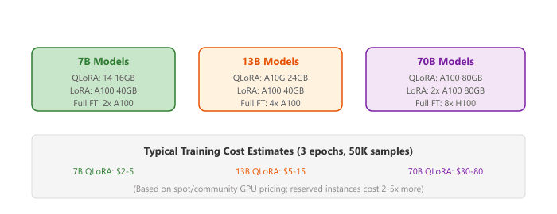

"The cheapest GPU is the one you don't accidentally leave running overnight."
LoRA, YAML-Weary AI Agent
This section continues from Section 17.3, which surveyed the major fine-tuning training platforms (Unsloth, Axolotl, LLaMA-Factory, torchtune, TRL). Here we put them side by side, walk through the cloud GPU landscape and its pricing tiers, and stitch the pieces into three recommended end-to-end workflows (beginner, intermediate production, advanced multi-stage alignment).
Prerequisites
This section continues from Section 17.3. Familiarity with the five tools surveyed there (Unsloth, Axolotl, LLaMA-Factory, torchtune, TRL) is assumed.
17.3.6 Tool Comparison Matrix
| Feature | Unsloth | Axolotl | LLaMA-Factory | torchtune | TRL |
|---|---|---|---|---|---|
| Interface | Python API | YAML config | Web UI + CLI | CLI + Python | Python API |
| Speed | 2x faster | 1x (standard) | 1x (standard) | 1x (standard) | 1x (standard) |
| Memory | 50% less | Standard | Standard | Standard | Standard |
| Multi-GPU | Limited | DeepSpeed, FSDP | DeepSpeed | FSDP native | Accelerate |
| RLHF/DPO (canonical home: Sec 18.1) | Via TRL | Via TRL | Built-in | Recipes | Core feature |
| Export | GGUF, vLLM | HF format | HF, GGUF | HF format | HF format |
| Best For | Speed, single GPU | Reproducibility | Beginners, teams | Custom research | Alignment |
Unsloth's speed advantage comes from custom CUDA/Triton kernels that may lag behind the latest model architectures. When a new model is released (for example, a new Qwen or Gemma variant), it can take days to weeks before Unsloth adds optimized support. Axolotl and TRL, which rely on standard Hugging Face Transformers, typically support new models within hours of their release. Plan accordingly if you need cutting-edge model support.
The fine-tuning toolchain is well-documented in the wild. Hugging Face's own TRL is the canonical reference; the Zephyr, StarCoder2, and IDEFICS3 model card releases describe their TRL recipes openly. Axolotl powers many open-weights model releases: NousResearch (Hermes), the Dolphin series, and most TheBloke-era community fine-tunes shipped with Axolotl YAMLs. Unsloth's Discord features case studies from indie devs fine-tuning Llama 3 70B on a single 24 GB consumer card. On the enterprise side, Together AI, Predibase, and Anyscale offer Axolotl/torchtune as a hosted product; OpenPipe (YC W24) wraps the same stack in a one-click product targeted at startups replacing GPT-4 with a smaller LoRA-tuned model.
To fuse multiple LoRA adapters or full fine-tunes into one model, use mergekit from Arcee AI. A YAML config picks the merge method (slerp, ties, dare_ties, linear, model_stock), the source models and weights, and the base model used as the reference. Mergekit is the engine behind most of the top-ranked merges on the Open LLM Leaderboard and works equally well for adapters via mergekit-lora.
Show code
pip install mergekit
# config.yaml selects models, weights, and merge method (slerp/ties/dare_ties)
import subprocess
subprocess.run(["mergekit-yaml", "config.yaml", "./merged",
"--cuda", "--copy-tokenizer", "--allow-crimes"], check=True)17.3.7 Cloud Compute Options
Choosing the right GPU infrastructure depends on your budget, scale, and workflow preferences. Here is a comparison of the major options available for LLM fine-tuning.
| Platform | GPU Options | Price Range | Best For |
|---|---|---|---|
| Google Colab | T4 (free), A100 (Pro+) | Free to $50/mo | Prototyping, learning, small models |
| Lambda Labs | A100, H100 | $1.10-$2.49/hr per GPU | On-demand training, reserved instances |
| RunPod | A100, H100, A6000 | $0.44-$3.89/hr per GPU | Serverless, spot pricing, community cloud |
| Modal | A100, H100, T4 | Pay-per-second | Serverless functions, burst training |
| Vast.ai | Various (marketplace) | $0.20-$2.00/hr | Cheapest option, community GPUs |
| AWS/GCP/Azure | Full range | $1.00-$30+/hr | Enterprise, compliance, multi-region |
Figure 17.3a.1 maps GPU requirements and approximate costs by model size and fine-tuning method.
Hugging Face's PEFT library reduced the code needed to add LoRA to a model from hundreds of lines to roughly five. Democratizing access to advanced techniques is great, until you realize that "easy to use" also means "easy to misuse with default settings."

For beginners, start with Google Colab Pro ($10/month) to experiment with QLoRA on 7B models using a T4 or A100 GPU. Once you have a working pipeline, move to RunPod or Lambda Labs for longer training runs. Modal is excellent for teams that want serverless infrastructure where you pay only for the seconds of GPU time you actually use.
17.3.8 Recommended Workflows
Here are recommended end-to-end workflows depending on your experience level and requirements.
Beginner: First Fine-Tune
- Use Google Colab with a free T4 GPU
- Install Unsloth for optimized training
- Fine-tune a 7B model with QLoRA (r=16)
- Export to GGUF and test with Ollama locally
Intermediate: Production Fine-Tune
- Use Axolotl for reproducible YAML-based configuration
- Train on RunPod or Lambda Labs with an A100
- Run evaluation suite before and after training
- Merge adapter and deploy via vLLM
Advanced: Multi-Stage Alignment
- SFT with TRL + LoRA on instruction data
- DPO with TRL + LoRA on preference pairs
- Merge both adapters sequentially
- Evaluate with custom benchmarks and human evaluation
- Deploy with vLLM or serve adapters via LoRAX
After training, merge LoRA weights into the base model with model.merge_and_unload(). This eliminates adapter overhead during inference, making your fine-tuned model exactly as fast as the base model with no additional memory cost.
Training platforms are converging on declarative configuration formats (like Axolotl's YAML-based setup) that abstract away distributed training details and let practitioners focus on data and hyperparameters. Cloud-native fine-tuning services are integrating evaluation pipelines directly into the training loop, automatically running benchmark suites at checkpoints and selecting the best model without manual intervention.
An emerging frontier is on-device PEFT, where LoRA adapters are trained directly on edge devices (phones, laptops) using private user data, enabling personalization without cloud round-trips. Apple's on-device LoRA work (2024) demonstrates adapter training on iPhone hardware with less than 1 GB of additional memory.
- Tool choice is a function of constraints: single-GPU speed (Unsloth), reproducibility (Axolotl), UI-driven teams (LLaMA-Factory), custom research (torchtune), alignment training (TRL).
- Cutting-edge support lags Unsloth. Stock HF-based stacks support new models within hours; Unsloth often takes days to weeks.
- Spot/community GPUs (RunPod, Vast.ai) are 2-5x cheaper than reserved cloud, and adequate for most fine-tuning runs that tolerate occasional preemption.
- QLoRA on a T4 costs under $5 for a typical 7B fine-tuning run, making experimentation accessible to almost anyone.
- For beginners, start with Colab + Unsloth on 7B models. For production, use Axolotl on RunPod or Lambda Labs. For alignment, use TRL.
Show Answer
Show Answer
SFTTrainer with a LoRA config. For the DPO stage, use DPOTrainer starting from the SFT checkpoint. Optionally, use Unsloth as the model backend for 2x speed improvement on both stages. TRL handles the LoRA adapter management automatically across both training phases.Exercises
Write a function that recommends a GPU configuration given the model size (in billions of parameters) and PEFT method (LoRA, QLoRA, full fine-tune). Consider VRAM requirements.
Answer Sketch
Rough estimates: Full fine-tune needs ~4 bytes * params * 4 (weights + gradients + optimizer). QLoRA: 0.5 bytes * params (4-bit model) + LoRA parameters in fp16. LoRA: 2 bytes * params + LoRA in fp16. For 7B: full = ~112GB (2x A100-80GB), LoRA = ~28GB (1x A100-40GB), QLoRA = ~10GB (1x RTX 4090). For 70B: full = ~1.1TB (14x A100-80GB), QLoRA = ~48GB (1x A100-80GB). Return GPU type and count recommendation.
Compare the hourly cost and time to fine-tune a 7B model using QLoRA on three cloud platforms: (a) Lambda Labs A100, (b) RunPod A100, (c) Google Colab Pro A100. Assume 2 hours of training.
Answer Sketch
Approximate costs: Lambda Labs A100-80GB: ~$1.50/hr = $3.00. RunPod A100-80GB: ~$1.20/hr = $2.40. Google Colab Pro: ~$10/month flat (but limited GPU time and less reliable). For a one-off 2-hour job, RunPod is cheapest. For regular experimentation, Colab Pro offers the best value if you stay within usage limits.
What Comes Next
In the next section, Section 17.4: Soft Prompts: Prompt Tuning, Prefix Tuning, and P-Tuning, we cover soft-prompt-based PEFT methods.
For the open-weight fine-tuning frameworks (Axolotl, Unsloth, Hugging Face PEFT) that wrap these platforms, see Section 19.1: Training Platforms and Frameworks. For the compute-planning and GPU-rental side of training-platform selection, see Section 57.1: LLM Compute Planning and Infrastructure.